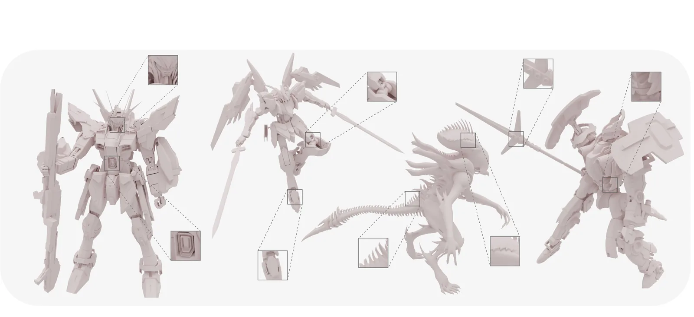
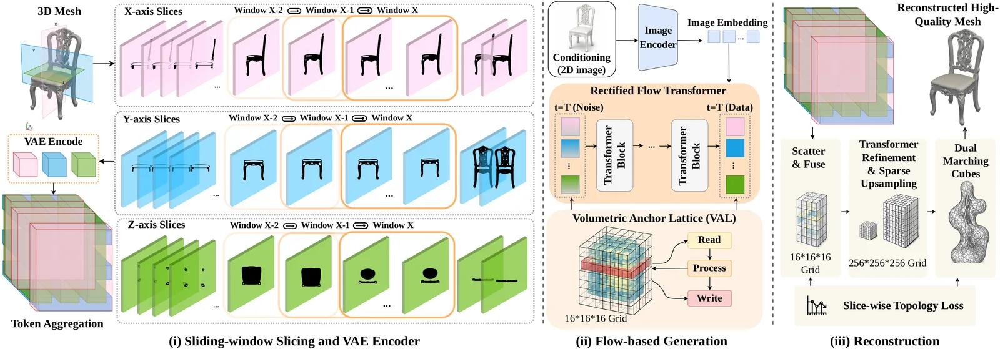
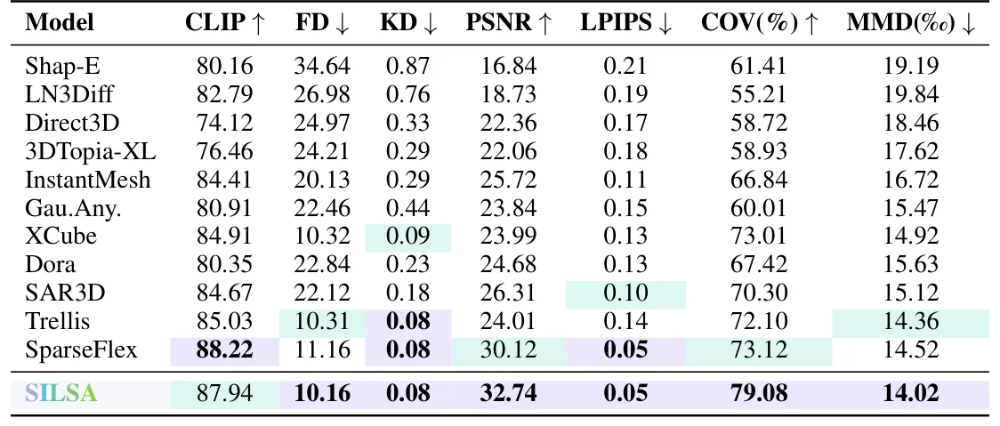
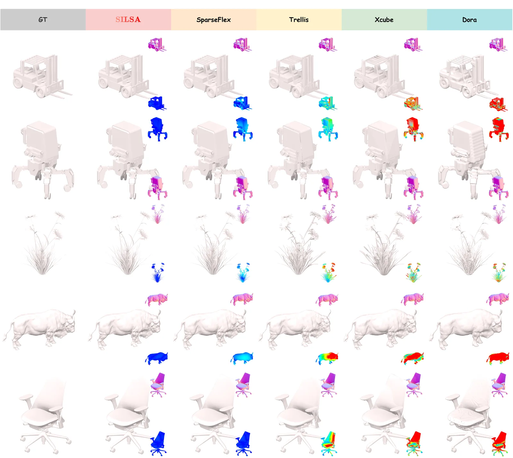

O problema: voxels fragmentam a superfície e explodem o custo
Modelos generativos 3D recentes aprenderam a sintetizar objetos completos a partir de uma imagem ou prompt de texto. A maioria codifica a forma em tokens latentes e treina transformers com difusão ou fluxo retificado para gerar geometria diretamente no espaço 3D. Mas representar alta resolução continua caro: grades de voxels densas crescem cubicamente com a resolução; tokenizadores esparsos, octrees e hierárquicos reduzem o custo modelando apenas regiões ocupadas ou de alto detalhe, mas o número de tokens ainda depende dos dados e pode explodir para objetos com suportes finos, muitas partes repetidas ou topologia complexa.
Alternativas compactas existem: latentes baseados em conjuntos de pontos, triplanos, primitivas geométricas. Elas mantêm a geração tratável, mas enfraquecem a correspondência direta entre um token e a estrutura geométrica local que ele deve preservar. O resultado: o modelo pode atingir baixo erro de superfície ou de renderização e ainda assim produzir uma forma estruturalmente errada—preenchendo um buraco, quebrando um suporte, fundindo dois componentes próximos.
Esse dilema é fundamental: você escolhe entre representações caras que fragmentam a superfície em muitos tokens locais ou representações compactas que perdem a ancoragem espacial necessária para preservar conectividade, buracos e partes finas. SILSA, desenvolvido na Universidade de Illinois Urbana-Champaign, propõe uma terceira via: fatiar o volume em planos sobrepostos ao longo dos três eixos canônicos e codificar cada fatia em um único token latente.

A ideia: fatias capturam topologia de uma região inteira em um token
A intuição central é que uma fatia—um plano com pequena espessura—captura a topologia de uma região planar inteira em uma unidade coerente. Representações existentes fragmentam essa estrutura em muitas células locais ou a comprimem em tokens com correspondência espacial enfraquecida. Uma sequência de fatias preserva continuidade ao longo do eixo de corte, expondo diretamente como componentes conectados, buracos e fronteiras de partes evoluem em cada direção canônica.
SILSA decompõe a forma em três sequências de fatias sobrepostas ao longo dos eixos x, y e z. Para N posições de fatia por eixo, o gerador opera sobre apenas 3N tokens latentes, independentemente da ocupação do objeto, área de superfície ou complexidade de partes. Os autores usam N=128, totalizando 384 tokens. Como cada token resume uma janela de profundidade local em vez de um plano infinitesimal, a representação permanece compacta enquanto ainda expõe partes finas, superfícies próximas e pequenas aberturas ao modelo.
As três sequências fornecem vistas transversais complementares do mesmo objeto, dando ao SILSA uma sequência latente curta e espacialmente indexada para geração 3D de alta resolução. Essa estrutura fixa dispensa a etapa separada de predição de voxels ativos que pipelines em múltiplos estágios exigem.
SliceVAE: codificação por janela deslizante e decodificação volumétrica esparsa
O SliceVAE mapeia formas 3D para latentes de fatias multi-eixo compactos e os decodifica em malha de alta resolução. O encoder agrega pontos de superfície com janelas deslizantes sobrepostas ao longo dos três eixos canônicos, produzindo um conjunto compacto de tokens que preserva estrutura transversal local.
Formalmente, dada uma malha 3D, o encoder amostra uma nuvem de pontos P com normais e particiona a caixa delimitadora em N=128 bins por eixo. Para o bin k ao longo do eixo j, a janela reúne todos os pontos dentro de w/2 bins de cada lado. Cada bin pode conter poucos pontos; para fornecer contexto geométrico suficiente, o encoder usa uma janela deslizante de w bins vizinhos. Os autores adotam o paradigma de pooling local de trabalhos anteriores—agregando features de nuvem de pontos via PointNet—mas substituem voxels estruturados por fatias planares.
O decoder popula uma grade volumétrica de features a partir desses tokens e reconstrói geometria através de upsampling volumétrico esparso. As três sequências de fatias fornecem evidência geométrica complementar que o decoder funde para reconstrução fiel. O processo termina com Dual Marching Cubes, extraindo malha de alta resolução (256×256×256) a partir da grade refinada.

Supervisão topológica: diagramas de persistência e transições de Betti
Para preservar correção estrutural, SILSA introduz perda de topologia no nível de fatia que supervisiona seções transversais decodificadas. A perda combina dois componentes: correspondência de diagramas de persistência e alinhamento de transições de Betti entre fatias vizinhas.
Diagramas de persistência capturam quando componentes conectados e buracos aparecem e desaparecem ao longo de uma filtragem—neste caso, ao longo da sequência de fatias. A perda de persistência penaliza discrepâncias entre os diagramas da fatia decodificada e da fatia ground-truth, forçando o modelo a preservar a estrutura topológica em cada seção transversal.
Transições de Betti medem como o número de componentes conectados (Betti-0) e buracos (Betti-1) muda de uma fatia para a vizinha. A perda de transição de Betti alinha essas mudanças entre fatias consecutivas, garantindo que o decoder não introduza ou remova componentes ou buracos de forma inconsistente ao longo do eixo de corte. Juntas, essas perdas topológicas supervisionam a continuidade transversal e a coerência estrutural global.
Geração com fluxo retificado e Volumetric Anchor Lattice
SILSA treina um transformer de fluxo retificado para gerar latentes de fatias condicionado em uma imagem de entrada. Como o layout de fatias é fixo, a geração não requer estágio separado de predição de voxels ativos. Em vez disso, o modelo introduz o Volumetric Anchor Lattice (VAL), uma memória espacial compartilhada que permite tokens de fatias de diferentes eixos lerem e escreverem planos âncora alinhados aos eixos durante o denoising.
Cada token de fatia lê do plano âncora associado ao seu eixo e posição de profundidade, processa a informação através de blocos transformer, e escreve de volta no plano âncora. Esse mecanismo permite que evidência alinhada aos eixos x, y e z se acumule em um workspace 3D compartilhado e forme uma única forma coerente. O VAL coordena as três correntes direcionais de fatias, garantindo que o gerador produza latentes consistentes que o decoder pode reconstruir em geometria globalmente coerente.
O transformer é condicionado em embeddings de imagem extraídos por um encoder 2D. O fluxo retificado interpola linearmente entre ruído (t=T) e dados (t=0), e o modelo aprende a prever a direção do fluxo em cada passo de tempo. Essa formulação de estágio único é mais simples e eficiente que pipelines em múltiplos estágios que primeiro preveem estrutura ativa e depois sintetizam geometria local.
Resultados: qualidade superior com 98% menos tokens
Os autores treinaram SILSA no Trellis-500K e avaliaram em 200 assets do Toys4K e 50 imagens in-the-wild, sem sobreposição com o treino. A comparação de geração image-to-3D inclui ShapeE, LN3Diff, Direct3D, 3DTopia-XL, InstantMesh, GaussianAnything, XCube, Dora, SAR3D, Trellis e SparseFlex. Métricas: CLIP similarity (alinhamento entrada-saída), FD e KD (qualidade generativa), PSNR e LPIPS (fidelidade visual), COV e MMD (fidelidade distribucional), Betti error (correção topológica).
SILSA alcança o melhor FD, PSNR, coverage e MMD, igualando o melhor KD e LPIPS. Comparado ao SparseFlex, o baseline mais forte, SILSA melhora PSNR de 30.12 para 32.74 (ganho relativo de 8.7%), aumenta coverage de 73.12% para 79.08% (melhoria absoluta de 5.96 pontos), e reduz Betti error em 9.2%. Esses ganhos indicam que as formas geradas estão mais próximas da distribuição alvo, preservam geometria de maior fidelidade e mantêm diversidade estrutural mais ampla.
Embora SparseFlex atinja CLIP score ligeiramente superior, SILSA obtém métricas geométricas e distribucionais substancialmente melhores, sugerindo que a representação de latentes de fatias melhora fidelidade 3D sem sacrificar alinhamento com a imagem.

Reconstrução do VAE: melhor geometria e topologia
A avaliação de reconstrução do SliceVAE usa Chamfer Distance (CD), F-Score em thresholds de 0.01 e 0.005, IoU e Betti error. Betti error é calculado como a discrepância média de componentes conectados e buracos no conjunto de teste. SILSA supera consistentemente tokenizadores 3D fortes em todas as métricas.
Comparado ao SparseFlex, SILSA reduz CD de 0.61 para 0.59, melhora F-Score@0.01 de 96.18 para 96.79, F-Score@0.005 de 83.62 para 84.03, e aumenta IoU de 92.54 para 93.01. Mais importante, Betti error diminui de 1.743 para 1.582—redução relativa de 9.2%—mostrando que o SliceVAE preserva melhor componentes conectados e buracos, não apenas melhora fidelidade de superfície.
Essa melhoria topológica é o objetivo central do paper: não basta reconstruir superfícies com baixo erro; é preciso preservar a estrutura—buracos, suportes finos, conectividade de longo alcance. A supervisão topológica no nível de fatia cumpre essa promessa.

Eficiência: 384 tokens versus dezenas de milhares
SILSA usa apenas 384 tokens—três sequências de 128 fatias. Isso é mais de 98% menos tokens que Trellis, XCube e SparseFlex, cujos contadores de tokens variam com os dados. Métodos de comprimento variável reportam contagens médias: os autores não fornecem o número exato na tabela, mas destacam a redução drástica. SILSA usa 70.0% menos tokens que o baseline mais compacto seguinte e mais de 98% menos que tokenizadores esparsos ou hierárquicos.
Essa redução se traduz diretamente em menor custo computacional. Comparado ao Dora, SILSA reduz memória de treino de 14.6GB para 8.7GB (redução de 40.4%), tempo de treino por iteração de 0.89s para 0.60s, e tempo de inferência de 1.41s para 0.58s (redução de 58.5%). Apesar da grande redução no comprimento da sequência, SILSA alcança a melhor qualidade de reconstrução.
A representação compacta também simplifica o pipeline: geração de estágio único, sem predição separada de voxels ativos. Isso torna o treinamento mais estável e a inferência mais rápida, removendo a complexidade de coordenar múltiplos estágios.
O que o paper não mostra
SILSA foi treinado e avaliado no Trellis-500K, um dataset de objetos 3D sintéticos. A avaliação de geração usa 200 assets do Toys4K e 50 imagens in-the-wild, mas não fica claro quão diversos são esses 50 exemplos ou se cobrem categorias desafiadoras como cenas complexas, objetos articulados ou formas orgânicas com topologia muito rica.
O paper não reporta tempo de treinamento total, número de GPUs ou custo computacional absoluto—apenas comparações relativas de memória e tempo por iteração. Também não discute como o método escala para resoluções ainda maiores (512³ ou 1024³) ou para objetos com topologia extremamente complexa (centenas de buracos, milhares de componentes).
A escolha de N=128 fatias por eixo e janela deslizante de largura w não é ablacionada em detalhe: não sabemos o impacto de N=64 ou N=256, nem de janelas maiores ou menores. A supervisão topológica é inovadora, mas o paper não compara seu impacto isolado contra outras formas de regularização estrutural.
Finalmente, SILSA gera malhas, não representações implícitas contínuas ou campos neurais. Isso limita a aplicação a casos onde malhas explícitas são desejadas, mas pode não ser ideal para renderização neural ou edição interativa que se beneficia de representações implícitas.
Por que isso importa
Geração 3D de alta resolução está se tornando viável, mas a maioria dos métodos ainda luta para preservar estrutura fina: suportes quebram, buracos são preenchidos, componentes próximos se fundem. Esses erros topológicos são críticos para aplicações práticas—design de produtos, fabricação, simulação física—onde a forma gerada precisa ser estruturalmente correta, não apenas visualmente plausível.
SILSA mostra que é possível melhorar fidelidade topológica e reduzir drasticamente o custo de geração ao mesmo tempo. A ideia de fatiar o volume em planos sobrepostos e codificar cada fatia em um token latente é simples, mas eficaz: preserva continuidade transversal, expõe estrutura topológica ao modelo, e mantém a sequência de tokens fixa e curta.
A supervisão topológica no nível de fatias—diagramas de persistência e transições de Betti—é uma contribuição técnica importante. Ela vai além de perdas de superfície e volumétricas, supervisionando diretamente a correção estrutural. Essa abordagem pode ser adaptada para outras representações e tarefas onde topologia importa.
Do ponto de vista prático, reduzir tokens de dezenas de milhares para 384 torna geração 3D de alta resolução mais acessível: menos memória, menos tempo de treino, menos tempo de inferência. Isso abre caminho para modelos maiores, datasets maiores e aplicações interativas onde latência importa.
O que fica
- SILSA representa formas 3D com 384 tokens de fatias sobrepostas nos três eixos, reduzindo em 98% o número de tokens comparado a métodos esparsos e hierárquicos.
- Supervisão topológica com diagramas de persistência e transições de Betti reduz Betti error em 9.2%, preservando buracos, suportes finos e conectividade de longo alcance.
- Melhora PSNR em 8.7% e coverage em 5.96 pontos sobre o baseline mais forte, enquanto reduz memória de treino em 40.4% e tempo de inferência em 58.5%.
- Volumetric Anchor Lattice coordena as três correntes de fatias direcionais em um workspace 3D compartilhado, permitindo geração de estágio único sem predição separada de voxels ativos.
Paper original: SILSA: Sliding-Window Slice Latents for Topology-Preserving High-Resolution 3D Generation
Comentários
Nenhum comentário ainda. Seja o primeiro.